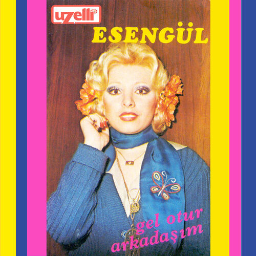
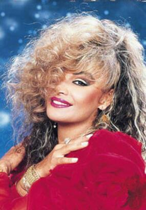

En Sevdiğiniz Arabesk Sanatçıları ve Şarkıları

Orhan Gencebay - Kaderimin Oyunu
 Kamuran Akkor - Bir Ateşe Attın
Kamuran Akkor - Bir Ateşe Attın
Cengiz Kurtoğlu - Duvardaki Resim

Müslüm Gürses - Nilüfer

İbrahim Tatlıses - Yalan

Ferdi Tayfur - Çiçekler Açsın

Hakan Taşıyan - Güz Gülleri

Azer Bülbül - Dokunmayın Çok Fenayım

Esengül - Beter Ol
